Suppose we were to wrap a coil of insulated wire around a loop of ferromagnetic material and energize this coil with an AC voltage source: (Figure below (a))
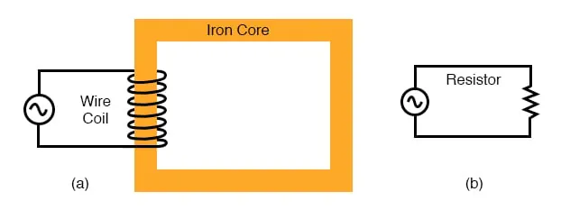
Insulated winding on the ferromagnetic loop has inductive reactance, limiting AC current
As an inductor, we would expect this iron-core coil to oppose the applied voltage with its inductive reactance, limiting current through the coil as predicted by the equations:
XL = 2πfL and I=E/X (or I=E/Z)
For the purposes of this example, though, we need to take a more detailed look at the interactions of voltage, current, and magnetic flux in the device.
Kirchhoff’s voltage law describes how the algebraic sum of all voltages in a loop must equal zero. In this example, we could apply this fundamental law of electricity to describe the respective voltages of the source and of the inductor coil.
Here, as in any one-source, one-load circuit, the voltage dropped across the load must equal the voltage supplied by the source, assuming zero voltage dropped along with the resistance of any connecting wires.
In other words, the load (inductor coil) must produce an opposing voltage equal in magnitude to the source, in order that it may balance against the source voltage and produce an algebraic loop voltage sum of zero.
From where does this opposing voltage arise? If the load were a resistor (figure above (b)), the voltage drop originates from electrical energy loss, the “friction” of charge carriers flowing through the resistance.
With a perfect inductor (no resistance in the coil wire), the opposing voltage comes from another mechanism: the reaction to a changing magnetic flux in the iron core. When AC current changes, flux Φ changes. Changing flux induces a counter EMF.
Michael Faraday discovered the mathematical relationship between magnetic flux (Φ) and induced voltage with this equation:
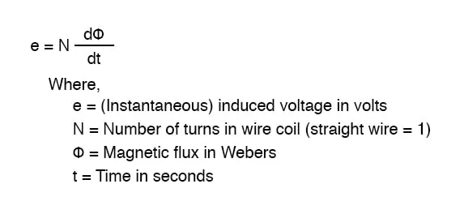
The instantaneous voltage (voltage dropped at any instant in time) across a wire coil is equal to the number of turns of that coil around the core (N) multiplied by the instantaneous rate-of-change in magnetic flux (dΦ/dt) linking with the coil.
Graphed (figure below), this shows itself as a set of sine waves (assuming a sinusoidal voltage source), the flux wave 90° lagging behind the voltage wave:
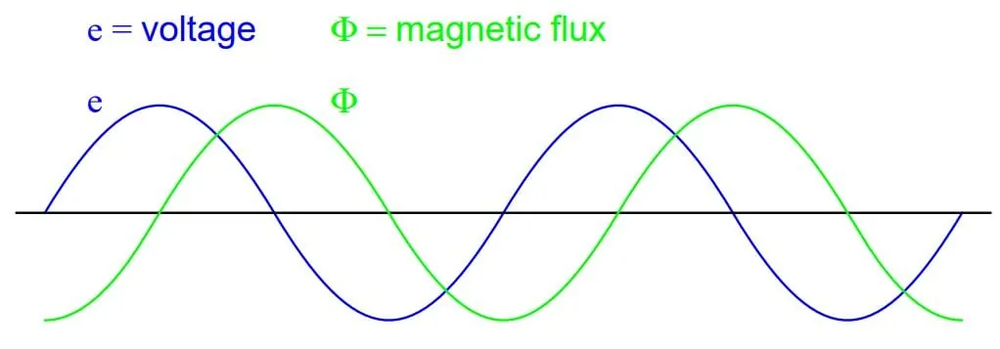
Magnetic flux, like current, lags applied voltage by 90°
This is why alternating current through an inductor lags the applied voltage waveform by 90°: because that is what is required to produce a changing magnetic flux whose rate-of-change produces an opposing voltage in-phase with the applied voltage.
Due to its function in providing a magnetizing force (mmf) for the core, this current is sometimes referred to as the magnetizing current.
It should be mentioned that the current through an iron-core inductor is not perfectly sinusoidal (sine-wave shaped), due to the nonlinear B/H magnetization curve of iron.
In fact, if the inductor is cheaply built, using as little iron as possible, the magnetic flux density might reach high levels (approaching saturation), resulting in a magnetizing current waveform that looks something like the figure below:
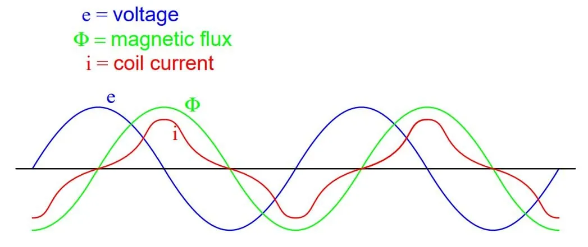
As flux density approaches saturation, the magnetizing current waveform becomes distorted
When a ferromagnetic material approaches magnetic flux saturation, disproportionately greater levels of magnetic field force (mmf) are required to deliver equal increases in magnetic field flux (Φ).
Because mmf is proportional to current through the magnetizing coil (mmf = NI, where “N” is the number of turns of wire in the coil and “I” is the current through it), the large increases of mmf required to supply the needed increases in flux results in large increases in coil current.
Thus, coil current increases dramatically at the peaks in order to maintain a flux waveform that isn’t distorted, accounting for the bell-shaped half-cycles of the current waveform in the above plot.
The situation is further complicated by energy losses within the iron core. The effects of hysteresis and eddy currents conspire to further distort and complicate the current waveform, making it even less sinusoidal and altering its phase to be lagging slightly less than 90° behind the applied voltage waveform.
This coil current resulting from the sum total of all magnetic effects in the core (dΦ/dt magnetization plus hysteresis losses, eddy current losses, etc.) is called the exciting current.
The distortion of an iron-core inductor’s exciting current may be minimized if it is designed for and operated at very low flux densities. Generally speaking, this requires a core with a large cross-sectional area, which tends to make the inductor bulky and expensive.
For the sake of simplicity, though, we’ll assume that our example core is far from saturation and free from all losses, resulting in a perfectly sinusoidal exciting current.
As we’ve seen already in the inductors chapter, having a current waveform 90° out of phase with the voltage waveform creates a condition where power is alternately absorbed and returned to the circuit by the inductor.
If the inductor is perfect (no wire resistance, no magnetic core losses, etc.), it will dissipate zero power.
Let us now consider the same inductor device, except this time with a second coil (Figure below) wrapped around the same iron core. The first coil will be labeled the primary coil, while the second will be labeled the secondary:
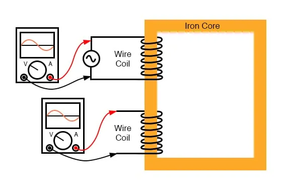
Ferromagnetic core with primary coil (AC driven) and secondary coil.
If this secondary coil experiences the same magnetic flux change as the primary (which it should, assuming perfect containment of the magnetic flux through the common core), and has the same number of turns around the core, a voltage of equal magnitude and phase to the applied voltage will be induced along its length.
In the following graph, (Figure below) the induced voltage waveform is drawn slightly smaller than the source voltage waveform simply to distinguish one from the other:
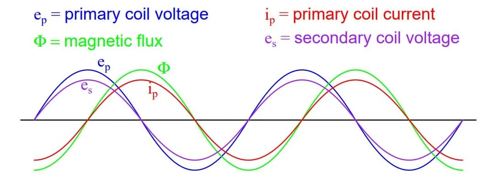
Open circuited secondary sees the same flux Φ as the primary. Therefore induced secondary voltage es is the same magnitude and phase as the primary voltage ep.
This effect is called mutual inductance: the induction of a voltage in one coil in response to a change in current in the other coil. Like normal (self-) inductance, it is measured in the unit of henries, but unlike normal inductance, it is symbolized by the capital letter “M” rather than the letter “L”:
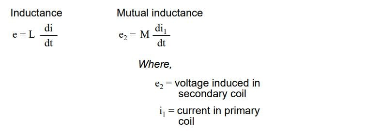
No current will exist in the secondary coil since it is open-circuited. However, if we connect a load resistor to it, an alternating current will go through the coil, in-phase with the induced voltage (because the voltage across a resistor and the current through it are always in-phase with each other). (Figure below)
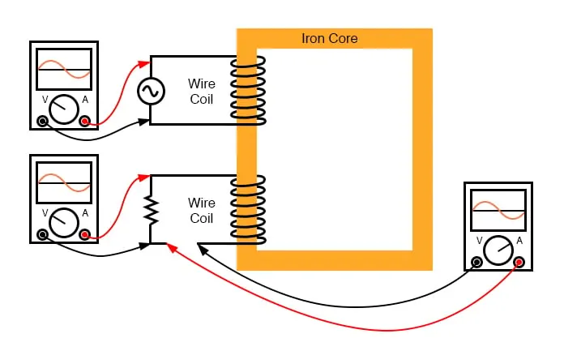
Resistive load on secondary has voltage and current in-phase.
At first, one might expect this secondary coil current to cause an additional magnetic flux in the core. In fact, it does not. If more flux were induced in the core, it would cause more voltage to be induced voltage in the primary coil (remember that e = dΦ/dt).
This cannot happen, because the primary coil’s induced voltage must remain at the same magnitude and phase in order to balance with the applied voltage, in accordance with Kirchhoff’s voltage law. Consequently, the magnetic flux in the core cannot be affected by the secondary coil current.
However, what does change is the amount of mmf in the magnetic circuit.
Magnetomotive force is produced any time current flows through a wire. Usually, this mmf is accompanied by magnetic flux, in accordance with the mmf=ΦR “magnetic Ohm’s Law” equation.
In this case, though, additional flux is not permitted, so the only way the secondary coil’s mmf may exist is if a counteracting mmf is generated by the primary coil, of equal magnitude and opposite phase.
Indeed, this is what happens, an alternating current forming in the primary coil—180° out of phase with the secondary coil’s current—to generate this counteracting mmf and prevent additional core flux.
Polarity marks and current direction arrows have been added to the illustration to clarify phase relations: (Figure below)
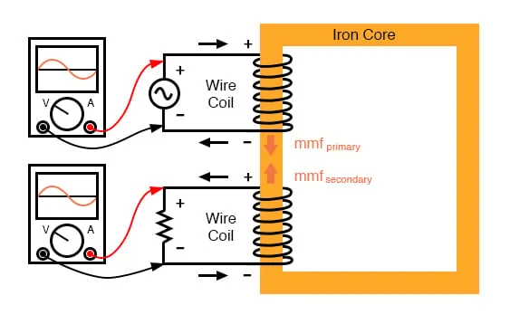
Flux remains constant with the application of a load. However, a counteracting mmf is produced by the loaded secondary.
If you find this process a bit confusing, do not worry. Transformer dynamics is a complex subject. What is important to understand is this: when an AC voltage is applied to the primary coil, it creates a magnetic flux in the core, which induces an AC voltage in the secondary coil in-phase with the source voltage.
Any current drawn through the secondary coil to power a load induces a corresponding current in the primary coil, drawing current from the source.
Notice how the primary coil is behaving like a load with respect to the AC voltage source, and how the secondary coil is behaving as a source with respect to the resistor.
Rather than energy merely being alternately absorbed and returned the primary coil circuit, energy is now being coupled to the secondary coil where it is delivered to a dissipative (energy-consuming) load. As far as the source “knows,” its directly powering the resistor.
Of course, there is also an additional primary coil current lagging the applied voltage by 90°, just enough to magnetize the core to create the necessary voltage for balancing against the source (the exciting current).
We call this type of device a transformer, because it transforms electrical energy into magnetic energy, then back into electrical energy again. Because its operation depends on electromagnetic induction between two stationary coils and a magnetic flux of changing magnitude and “polarity,” transformers are necessarily AC devices.
Its schematic symbol looks like two inductors (coils) sharing the same magnetic core: (Figure below)
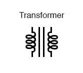
Schematic symbol for a transformer consists of two inductor symbols, separated by lines indicating a ferromagnetic core.
The two inductor coils are easily distinguished in the above symbol. The pair of vertical lines represent an iron core common to both inductors. While many transformers have ferromagnetic core materials, there are some that do not, their constituent inductors being magnetically linked together through the air.
The following photograph shows a power transformer of the type used in gas-discharge lighting. Here, the two inductor coils can be clearly seen, wound around an iron core. While most transformer designs enclose the coils and core in a metal frame for protection, this particular transformer is open for viewing and so serves its illustrative purpose well (Figure below):
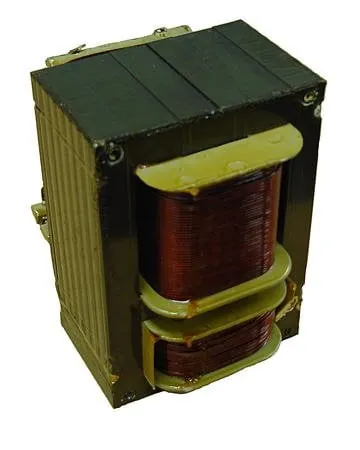
Example of a gas-discharge lighting transformer.
Both coils of wire can be seen here with copper-colored varnish insulation. The top coil is larger than the bottom coil, having a greater number of “turns” around the core. In transformers, the inductor coils are often referred to as windings, in reference to the manufacturing process where the wire is wound around the core material.
As modeled in our initial example, the powered inductor of a transformer is called the primary winding, while the unpowered coil is called the secondary winding.
In the next photograph (figure below), a transformer is shown cut in half, exposing the cross-section of the iron core as well as both windings. Like the transformer shown previously, this unit also utilizes primary and secondary windings of differing turn counts.
The wire gauge can also be seen to differ between primary and secondary windings. The reason for this disparity in wire gauge will be made clear in the next section of this chapter.
Additionally, the iron core can be seen in this photograph to be made of many thin sheets (laminations) rather than a solid piece. The reason for this will also be explained in a later section of this chapter.
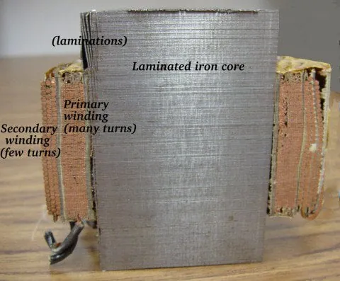
Transformer cross-section cut shows core and windings.
It is easy to demonstrate simple transformer action using SPICE, setting up the primary and secondary windings of the simulated transformer as a pair of “mutual” inductors (figure below).
The coefficient of magnetic field coupling is given at the end of the “k” line in the SPICE circuit description, this example being set very nearly at perfection (1.000). This coefficient describes how closely “linked” the two inductors are magnetical. The better these two inductors are magnetically coupled, the more efficient the energy transfer between them should be.
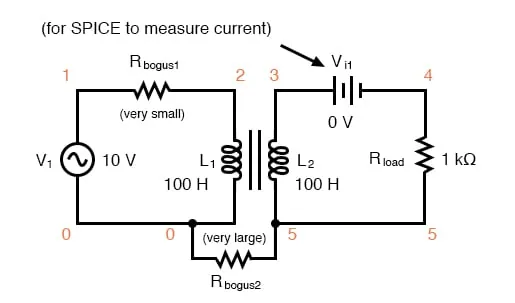
Spice circuit for coupled inductors.
transformer v1 1 0 ac 10 sin rbogus1 1 2 1e-12 rbogus2 5 0 9e12 l1 2 0 100 l2 3 5 100 This line tells SPICE that the two inductors l1 and l2 are magnetically “linked” together k l1 l2 0.999 vi1 3 4 ac 0 rload 4 5 1k .ac lin 1 60 60 .print ac v(2,0) i(v1) .print ac v(3,5) i(vi1) .end
Note: the Rbogus resistors are required to satisfy certain quirks of SPICE. The first breaks the otherwise continuous loop between the voltage source and L1 which would not be permitted by SPICE. The second provides a path to ground (node 0) from the secondary circuit, necessary because SPICE cannot function with any ungrounded circuits.
freq v(2) i(v1) 6.000E+01 1.000E+01 9.975E-03 Primary winding freq v(3,5) i(vi1) 6.000E+01 9.962E+00 9.962E-03 Secondary winding
Note that with equal inductances for both windings (100 henries each), the AC voltages and currents are nearly equal for the two. The difference between primary and secondary currents is the magnetizing current spoken of earlier: the 90° lagging current necessary to magnetize the core.
As is seen here, it is usually very small compared to primary current induced by the load, and so the primary and secondary currents are almost equal. What you are seeing here is quite typical of transformer efficiency.
Anything less than 95% efficiency is considered poor for modern power transformer designs, and this transfer of power occurs with no moving parts or other components subject to wear.
If we decrease the load resistance so as to draw more current with the same amount of voltage, we see that the current through the primary winding increases in response.
Even though the AC power source is not directly connected to the load resistance (rather, it is electromagnetically “coupled”), the amount of current drawn from the source will be almost the same as the amount of current that would be drawn if the load was directly connected to the source.
Take a close look at the next two SPICE simulations, showing what happens with different values of load resistors:
transformer v1 1 0 ac 10 sin rbogus1 1 2 1e-12 rbogus2 5 0 9e12 l1 2 0 100 l2 3 5 100 k l1 l2 0.999 vi1 3 4 ac 0 ** Note load resistance value of 200 ohms rload 4 5 200 .ac lin 1 60 60 .print ac v(2,0) i(v1) .print ac v(3,5) i(vi1) .end
freq v(2) i(v1) 6.000E+01 1.000E+01 4.679E-02 freq v(3,5) i(vi1) 6.000E+01 9.348E+00 4.674E-02
Notice how the primary current closely follows the secondary current. In our first simulation, both currents were approximately 10 mA, but now they are both around 47 mA. In this second simulation, the two currents are closer to equality, because the magnetizing current remains the same as before while the load current has increased.
Note also how the secondary voltage has decreased some with the heavier (greater current) load. Let’s try another simulation with an even lower value of load resistance (15 Ω):
transformer v1 1 0 ac 10 sin rbogus1 1 2 1e-12 rbogus2 5 0 9e12 l1 2 0 100 l2 3 5 100 k l1 l2 0.999 vi1 3 4 ac 0 rload 4 5 15 .ac lin 1 60 60 .print ac v(2,0) i(v1) .print ac v(3,5) i(vi1) .end
freq v(2) i(v1) 6.000E+01 1.000E+01 1.301E-01 freq v(3,5) i(vi1) 6.000E+01 1.950E+00 1.300E-01
Our load current is now 0.13 amps, or 130 mA, which is substantially higher than the last time. The primary current is very close to being the same, but notice how the secondary voltage has fallen well below the primary voltage (1.95 volts versus 10 volts at the primary).
The reason for this is an imperfection in our transformer design: because the primary and secondary inductances aren’t perfectly linked (a k factor of 0.999 instead of 1.000) there is “stray” or “leakage” inductance. In other words, some of the magnetic field isn’t linking with the secondary coil, and thus cannot couple energy to it: (Figure below)
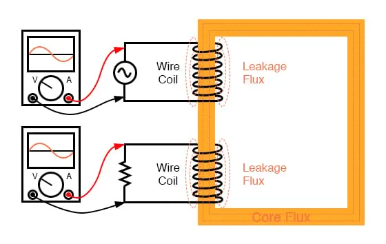
Leakage inductance is due to magnetic flux not cutting both windings.
Consequently, this “leakage” flux merely stores and returns energy to the source circuit via self-inductance, effectively acting as a series impedance in both primary and secondary circuits. Voltage gets dropped across this series impedance, resulting in a reduced load voltage: voltage across the load “sags” as load current increases. (Figure below)
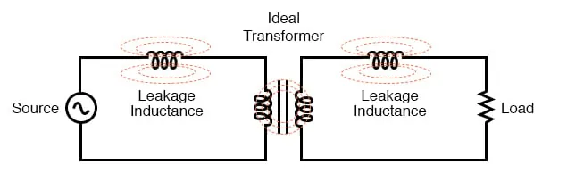
Equivalent circuit models leakage inductance as series inductors independent of the “ideal transformer”.
If we change the transformer design to have better magnetic coupling between the primary and secondary coils, the figures for voltage between primary and secondary windings will be much closer to equality again:
transformer v1 1 0 ac 10 sin rbogus1 1 2 1e-12 rbogus2 5 0 9e12 l1 2 0 100 l2 3 5 100 ** Coupling factor = 0.99999 instead of 0.999 k l1 l2 0.99999 vi1 3 4 ac 0 rload 4 5 15 .ac lin 1 60 60 .print ac v(2,0) i(v1) .print ac v(3,5) i(vi1) .end
freq v(2) i(v1) 6.000E+01 1.000E+01 6.658E-01 freq v(3,5) i(vi1) 6.000E+01 9.987E+00 6.658E-01
Here we see that our secondary voltage is back to being equal with the primary, and the secondary current is equal to the primary current as well. Unfortunately, building a real transformer with coupling this complete is very difficult.
A compromise solution is to design both primary and secondary coils with less inductance, the strategy being that less inductance overall leads to less “leakage” inductance to cause trouble, for any given degree of magnetic coupling inefficiency. This results in a load voltage that is closer to ideal with the same (high current heavy) load and the same coupling factor:
transformer v1 1 0 ac 10 sin rbogus1 1 2 1e-12 rbogus2 5 0 9e12 ** inductance = 1 henry instead of 100 henrys l1 2 0 1 l2 3 5 1 k l1 l2 0.999 vi1 3 4 ac 0 rload 4 5 15 .ac lin 1 60 60 .print ac v(2,0) i(v1) .print ac v(3,5) i(vi1) .end
freq v(2) i(v1) 6.000E+01 1.000E+01 6.664E-01 freq v(3,5) i(vi1) 6.000E+01 9.977E+00 6.652E-01
Simply by using primary and secondary coils of less inductance, the load voltage for this heavy load (high current) has been brought back up to nearly ideal levels (9.977 volts). At this point, one might ask, “If less inductance is all that’s needed to achieve near-ideal performance under heavy load, then why worry about coupling efficiency at all?
If it’s impossible to build a transformer with perfect coupling, but easy to design coils with low inductance, then why not just build all transformers with low-inductance coils and have excellent efficiency even with poor magnetic coupling?”
The answer to this question is found in another simulation: the same low-inductance transformer, but this time with a lighter load (less current) of 1 kΩ instead of 15 Ω:
transformer v1 1 0 ac 10 sin rbogus1 1 2 1e-12 rbogus2 5 0 9e12 l1 2 0 1 l2 3 5 1 k l1 l2 0.999 vi1 3 4 ac 0 rload 4 5 1k .ac lin 1 60 60 .print ac v(2,0) i(v1) .print ac v(3,5) i(vi1) .end
freq v(2) i(v1) 6.000E+01 1.000E+01 2.835E-02 freq v(3,5) i(vi1) 6.000E+01 9.990E+00 9.990E-03
With lower winding inductances, the primary and secondary voltages are closer to being equal, but the primary and secondary currents are not. In this particular case, the primary current is 28.35 mA while the secondary current is only 9.990 mA: almost three times as much current in the primary as the secondary.
Why is this? With less inductance in the primary winding, there is less inductive reactance, and consequently a much larger magnetizing current. A substantial amount of the current through the primary winding merely works to magnetize the core rather than transfer useful energy to the secondary winding and load.
An ideal transformer with identical primary and secondary windings would manifest equal voltage and current in both sets of windings for any load condition. In a perfect world, transformers would transfer electrical power from primary to secondary as smoothly as though the load was directly connected to the primary power source, with no transformer there at all.
However, you can see this ideal goal can only be met if there is a perfect coupling of magnetic flux between primary and secondary windings. Being that this is impossible to achieve, transformers must be designed to operate within certain expected ranges of voltages and loads in order to perform as close to ideal as possible.
For now, the most important thing to keep in mind is a transformer’s basic operating principle: the transfer of power from the primary to the secondary circuit via electromagnetic coupling.
REVIEW: